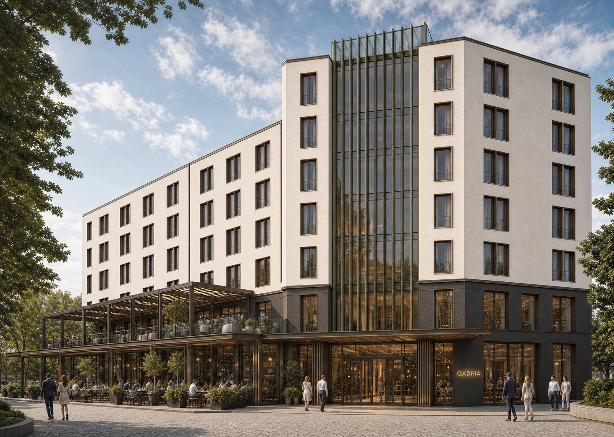
Qadria
Пять направлений
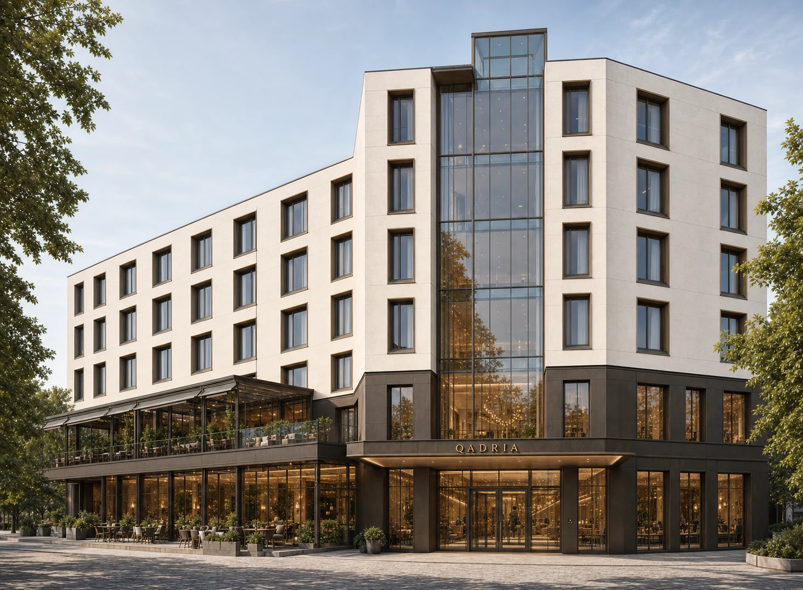
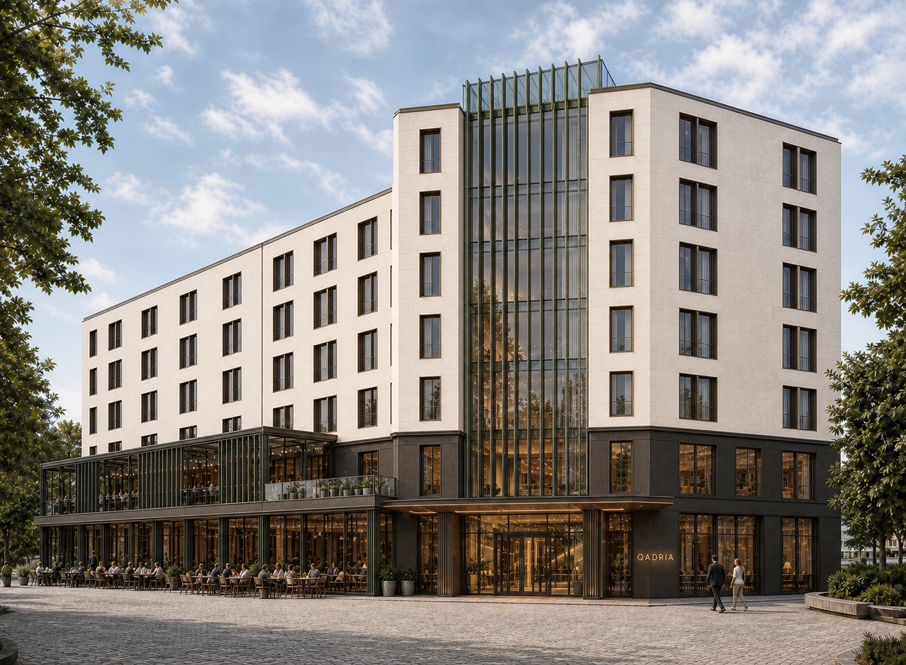
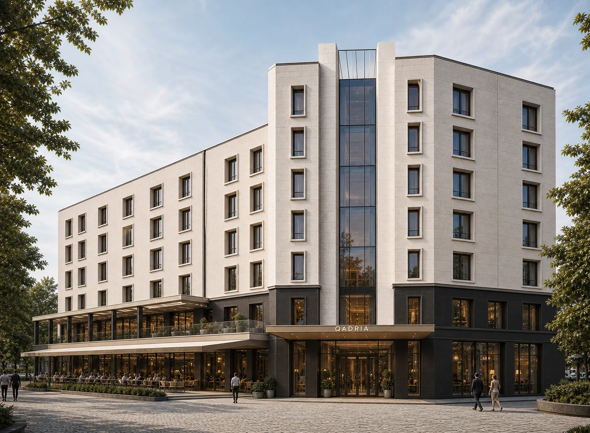
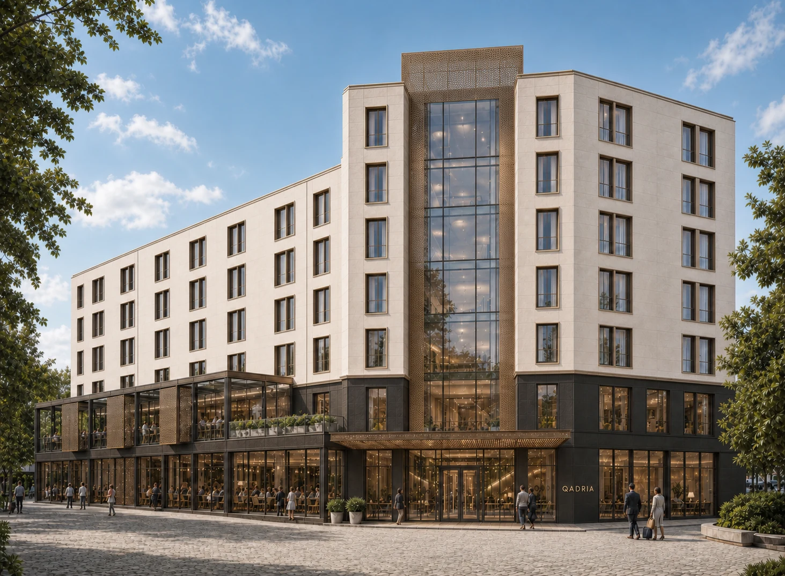
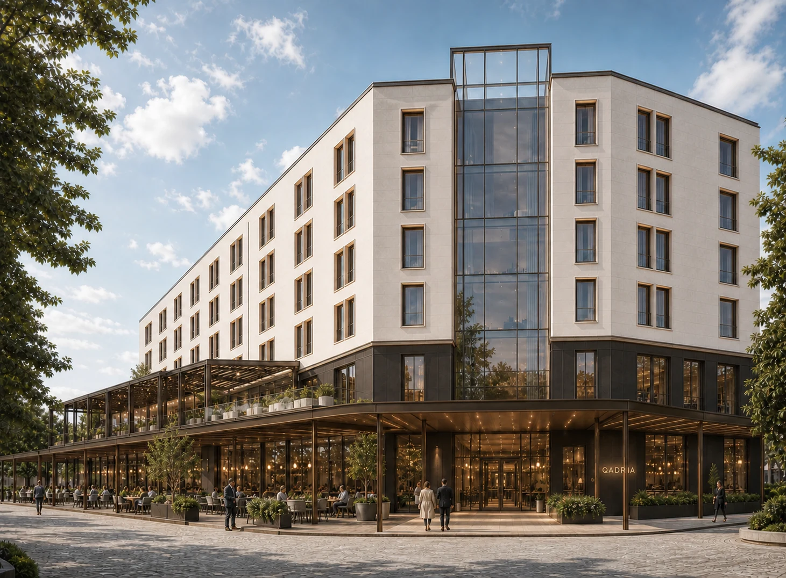
{kind=link}
{kind=link}
Детали
{kind=link}
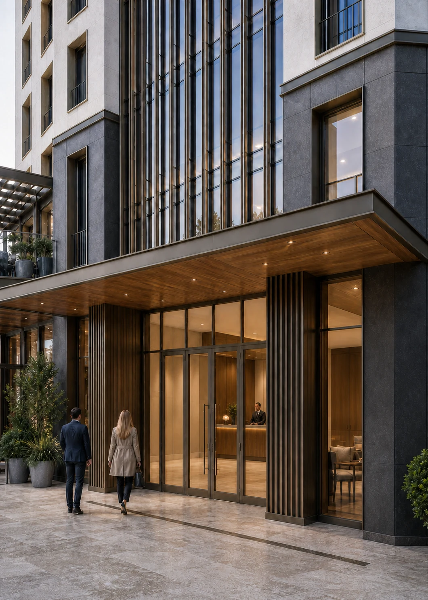
Козырёк и порог считываются как главный акцент, от которого продолжается сильная вертикаль из стекла вверх.
{kind=link}
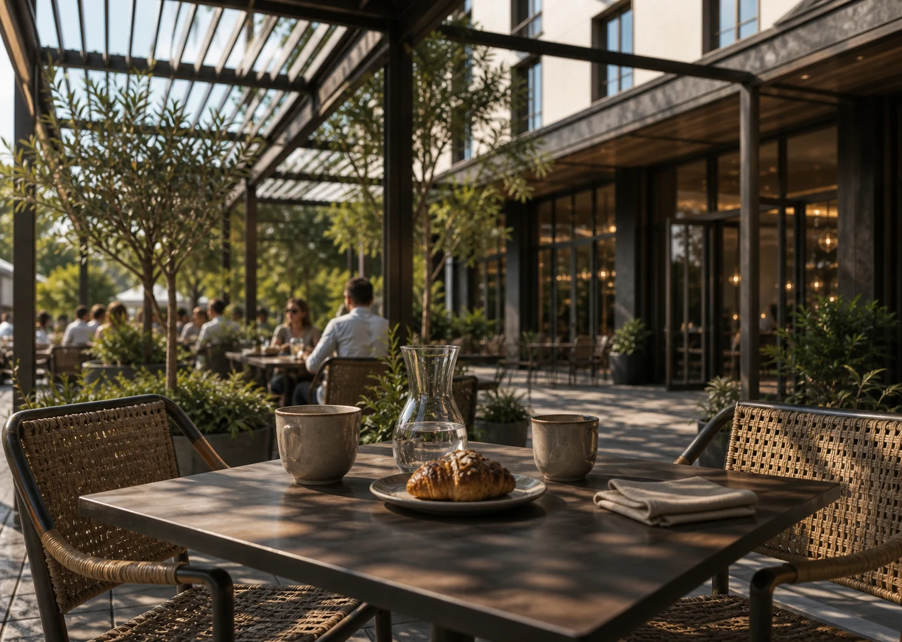
Общественная часть с уровня зрения гостя кофейни. Второй этаж веранды.
{kind=link}
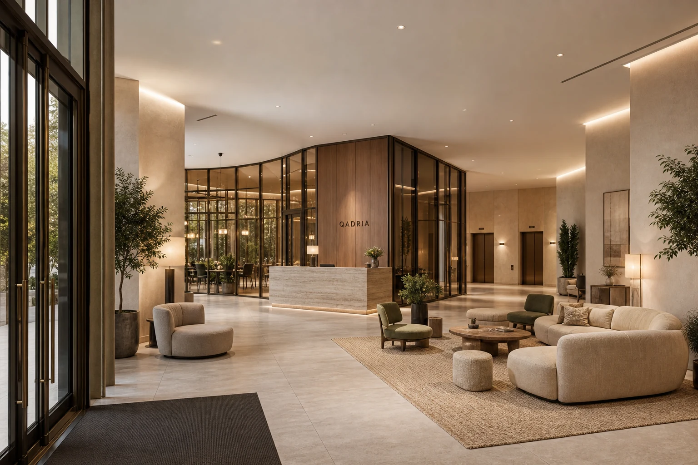
Широкий угловой холл, компактный ресепшн и ясный путь к лифтам.
Отель
Светлый минеральный фон, дуб, тёплый текстиль и небольшие бронзовые детали продолжают фасадную идею и используются как акцент для интуитивной навигации: вертикальные панели возле выхода к лифтам.
{kind=link}
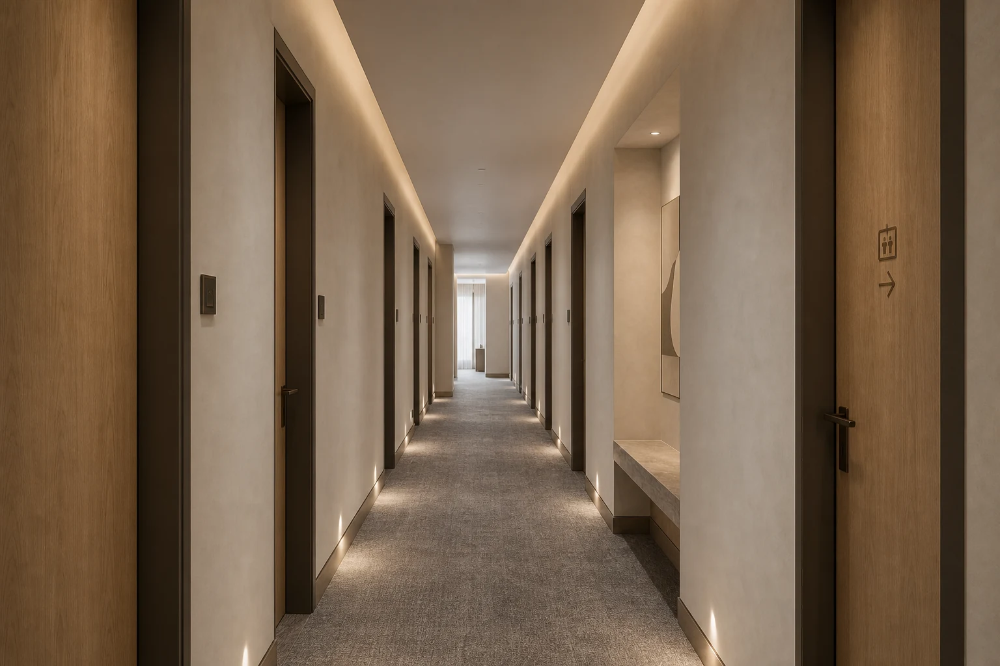
Ритм дверей и мягкий свет следуют типовой планировке этажей 3–5.

Поворот возле лифтового узла становится ориентиром.
{kind=link}
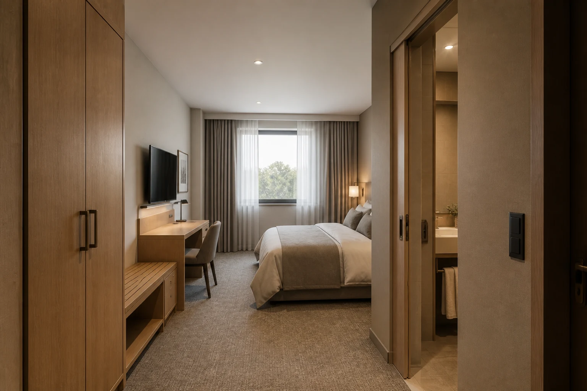
Категория примерно 18–23 м² плюс отдельная душевая: кровать и рабочая поверхность.
{kind=link}
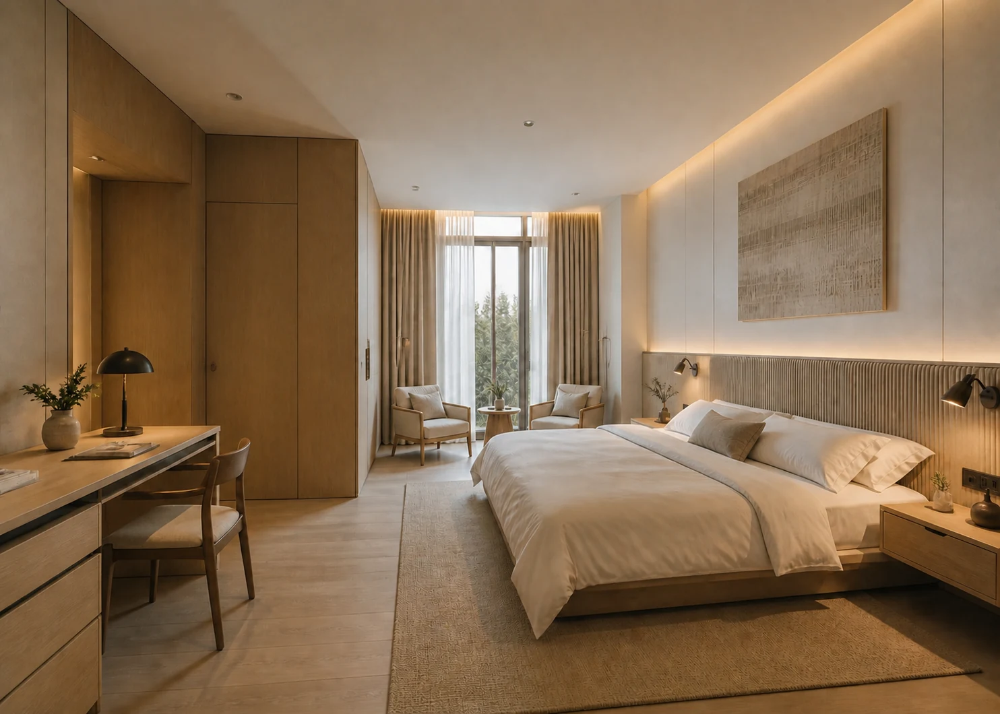
Категория примерно 35–43 м² получает самостоятельную рабочую и посадочную зону.
Интерьеры — ранние планово-атмосферные гипотезы по PDF.
Проверка идеи
Скетч и условная модель помогают проверить, остаётся ли архитектурный принцип узнаваемым без фотографического света и декора.
{kind=link}
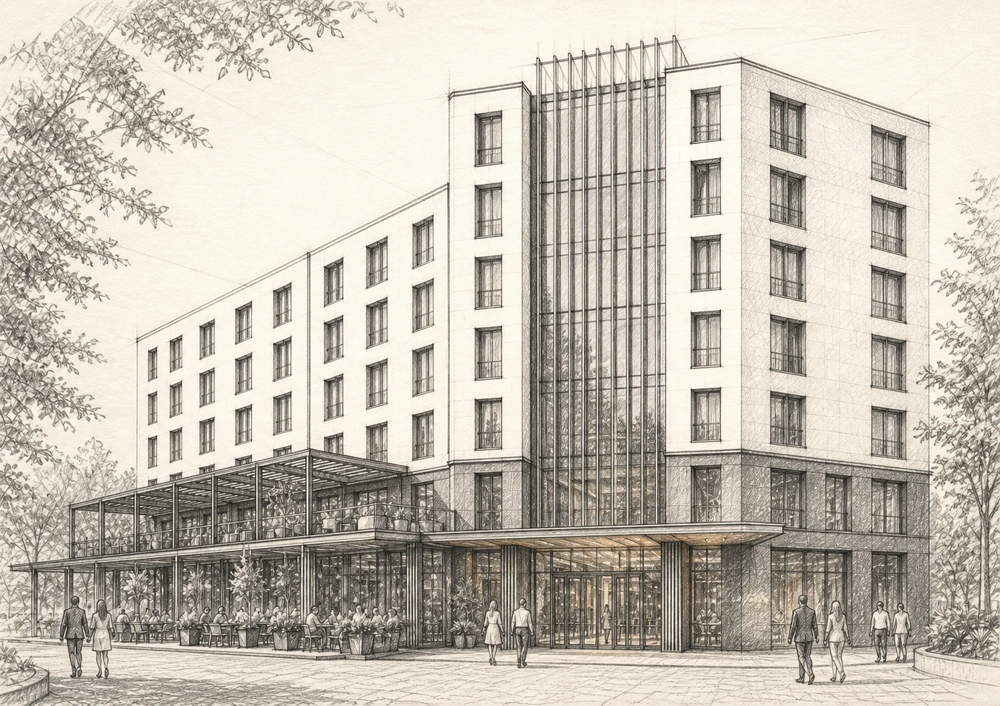
{kind=link}
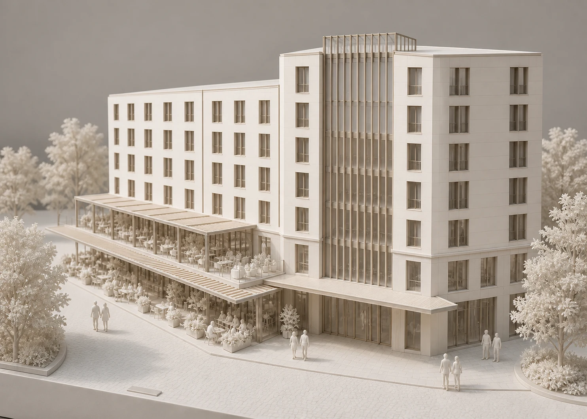